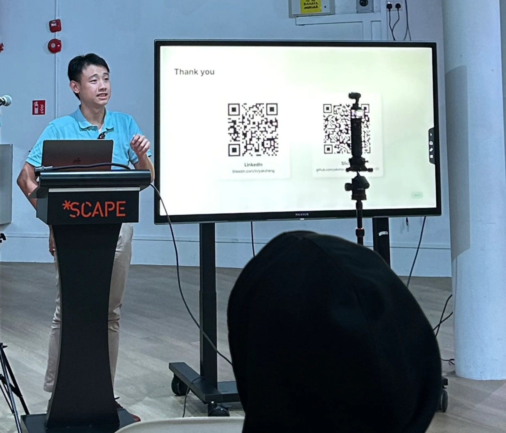
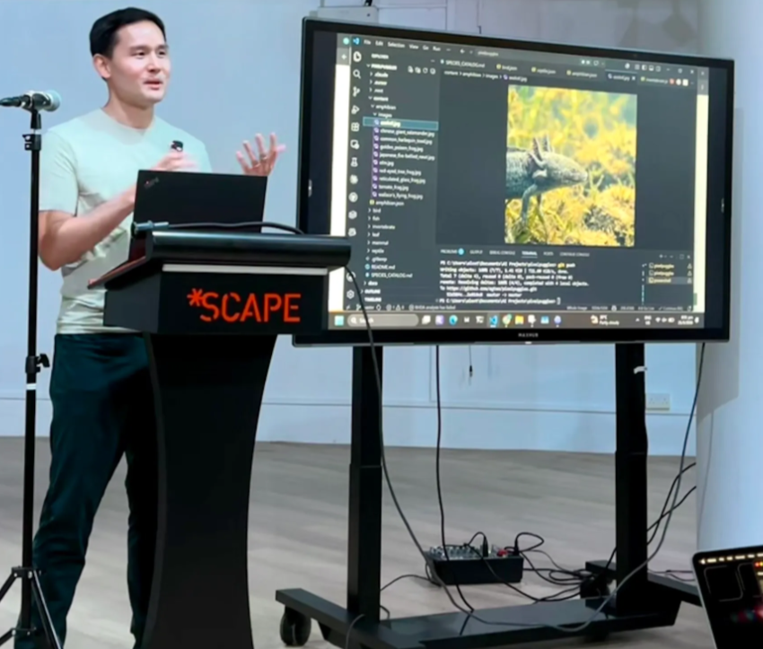
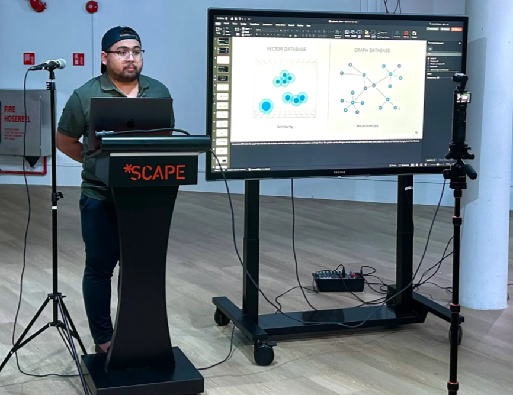

Roast #5 · May 21, 2026 · Singapore
Three builds went under the knife: an agent system that hunts business opportunities, a pixel art app with an agentic future, and a Postgres-based graph layer for AI agents. This recap preserves the practical decisions, trade-offs, and questions raised in the room.
Speaker 01
01
One Executive, Many Child Agents
Multiple agents work together: an executive agent controls many child agents. The critical design rule — a child agent must be very siloed and purpose-built. Each one does one job well and stays out of the others' business.
02
Hallucination Requires Layered Grounding
The key challenge was hallucination, and the answer was multiple layers of grounding — no single grounding source is enough when agents are compounding their own context.
03
Don't Over-Engineer
Don't jump straight into micro-services — a monolith might be better to start. You can always transition to scale later, and speed is still important in the early days of an agent system.
04
Deterministic Where It's Destructive
If an operation is high-risk or destructive, always go for the deterministic approach (code) rather than an agent. Never roll your own auth — airlock your auth by containerising it.
For observability, consider Grafana.
Speaker 02

01
Supabase Auth vs. Clerk
The choice: create an auth after 3 plays for lower barrier of entry, natively integrated with supabase. The trade-off — Supabase auth's messaging isn't as great, but Clerk's uptime isn't as good as Supabase.
02
Review The Schema Yourself
Data schema is still very important in system design, and you need to review it yourself — don't let the framework decide it for you.
03
Get Agent-Ready
Allow agent interaction with your app to prep for an agentic future. Check your surfaces against isitagentready.com to make your app more agent friendly.
04
Image Processing & Cost
Alec manually pixelated the photos and batch-uploaded them. Consider offloading pixelation to the user's device to better optimise. For image generation costing, consider Imagen 4 (6× cheaper) over competing generation models.
05
Automate Image Eval
Consider automating part of the image generation evaluation: use an LLM as a judge to check output. Two rules from the room: it must be a different model from the image gen model, and it should have access to a scientific database for best accuracy.
Speaker 03

01
Graph Databases Are Expensive
Graph databases carry a real cost. pgGraph's approach on Postgres is roughly 34× cheaper than Neo4j, bringing graph capabilities into a database teams already run.
02
Database Hydration
Database hydration (also known as object hydration) converts raw database query results — a row or an array — into fully functioning, in-memory programming objects. A big use case is fraud detection.
03
RAG vs. Graph
The room's clean takeaway: RAG is good for search; Graph finds the relations between entities. Use the right question per tool instead of forcing one to do both.
Venue sponsor

SGInnovate
PIC: Arul · Co-hosted with GrowthLab 
Event ops volunteers